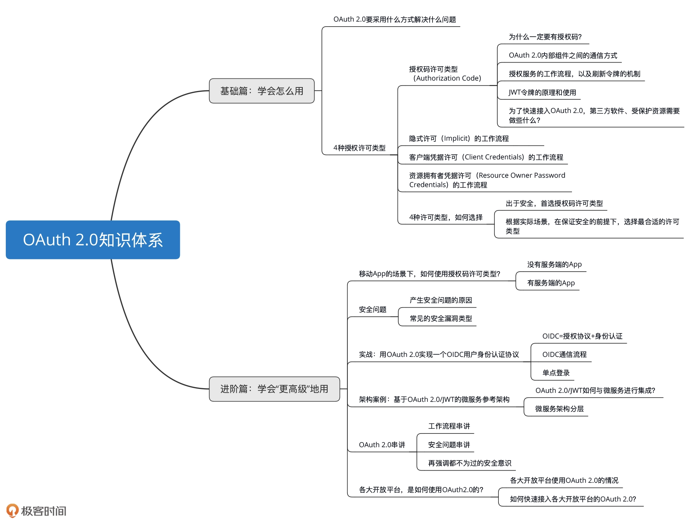

- 00 开篇词 为什么要学OAuth 2.0？.md.html
- 01 OAuth 2.0是要通过什么方式解决什么问题？.md.html
- 02 授权码许可类型中，为什么一定要有授权码？.md.html
- 03 授权服务：授权码和访问令牌的颁发流程是怎样的？.md.html
- 04 在OAuth 2.0中，如何使用JWT结构化令牌？.md.html
- 05 如何安全、快速地接入OAuth 2.0？.md.html
- 06 除了授权码许可类型，OAuth 2.0还支持什么授权流程？.md.html
- 07 如何在移动App中使用OAuth 2.0？.md.html
- 08 实践OAuth 2.0时，使用不当可能会导致哪些安全漏洞？.md.html
- 09 实战：利用OAuth 2.0实现一个OpenID Connect用户身份认证协议..md
- 10 串讲：OAuth 2.0的工作流程与安全问题.md.html
- 11 实战案例：使用Spring Security搭建一套基于JWT的OAuth 2.0架构.md.html
- 12 架构案例：基于OAuth 2.0_JWT的微服务参考架构.md.html
- 13 各大开放平台是如何使用OAuth 2.0的？.md.html
- 14 查漏补缺：OAuth 2.0 常见问题答疑.md.html
- 结束语 把学习当成一种习惯.md.html
- 捐赠
00 开篇词 为什么要学OAuth 2.0？
开篇词 为什么要学OAuth 2.0？你好，我是王新栋，是京东的资深架构师，主要负责京东商家开放平台的架构工作。在接下来的时间里，我将带你一起学习 OAuth 2.0 这个授权协议。
我从 2014 年加入京东，便开始接触开放平台相关的技术，主要包括网关、授权两块的内容。在刚开始的几年时间里面，我一直都认为网关是开放平台的核心，起到 “中流砥柱” 的作用，毕竟网关要承载整个开放平台的调用量，同时还要有足够的系统容错能力。
但随着对开放平台理解的不断深入，我们要想在开放平台支持更多样的业务场景，我才发现网关和授权同样重要，相当于开放平台的 “两条腿”。
而对于授权 “这条腿”，它不仅要像网关一样要承载访问量，还要同时兼顾业务场景的发展。什么样的业务场景呢？类似的微信登录就是其中之一，越来越多的第三方应用都在向用户提供使用微信登录的解决方案，来减少用户注册的繁琐操作。而这个解决方案的背后原理，也是我们这门课要讲到的 OAuth 2.0 技术。
OAuth 2.0 是什么？
那，OAuth 2.0 到底是什么呢？我们先从字面上来分析下。OAuth 2.0 一词中的 “Auth” 表示 “授权”，字母 “O” 是 Open 的简称，表示 “开放” ，连在一起就表示 “开放授权”。这也是为什么我们使用 OAuth 的场景，通常发生在开放平台的环境下。
看到这里，你可能会说应该还有 OAuth 1.0 吧。没错，OAuth 2.0 之前就是 OAuth 1.0。现在，我就来和你说说这两个版本的 OAuth 有什么区别吧。
在 OAuth 1.0 的时候，它有个 “很大的愿望” 就是想用一套授权机制来应对现实中的所有场景，比如 Web 应用场景、移动 App 应用场景、官方应用场景等等，但是这些场景并不是完全相同的。比如官方应用场景，你说还需要让用户来授权吗？如果需要，始终使用一套授权机制给用户带来的体验，是好还是坏呢？
到了 OAuth 2.0 的时候，就解决了 OAuth 1.0 面临的这种“尴尬”。OAuth 2.0 不再局限于一种授权机制，它扩充了授权许可机制类型，有了授权码许可机制、客户端凭据机制、资源拥有者凭据机制和隐式许可机制。这样的 OAuth 机制就能够很灵活地适应现实中的各种场景，比如移动应用的场景、官方应用的场景，等等。
此外，OAuth 1.0 的弊端还包括安全上的固化攻击等问题，因此 OAuth 1.0 现在已经是废弃状态了。对于我们来讲，直接使用 OAuth 2.0 就可以了。
为什么会有这门课？
但其实呢，OAuth 2.0 并不是一门新的技术，从 2007 年 OAuth 1.0 面世，到 2011 年发布 OAuth 2.0 草案，互联网上已经有很多关于 OAuth 的资料了。所以，在我初次接触 OAuth 2.0 去查阅这些零散的资料时，觉得 OAuth 2.0 很简单啊，不就是授权吗，看两篇文章就够了啊。
但是，看似简单的 OAuth 2.0 却又让我望而却步，在如何使用授权码流程上踌躇不前。比如，在 Web 应用中到底应该怎么使用授权码流程，移动 App 中还能使用授权码流程吗？当我带着这些问题尝试到网上搜索资料时，那些不成体系的资料着实也让我走了不少弯路。不知道你是不是也被下面问题困扰着：
我要开发一个 Web 应用，当使用 OAuth 2.0 的时候，担心授权码被拦截，却因为没有较好的解决方法而一筹莫展。
我要开发一款移动 App，当使用 OAuth 2.0 的时候，在确定是否需要 Server 端上，花费了大把的时间。
后来我看到《OAuth 2 in Action》这本书，如获至宝。它非常系统地讲解了 OAuth2.0，让我对这个协议框架有了更全面、深刻的认识。也正是这本书给了我足够的勇气，让我能够把自己这些年在开放平台的工作中，所掌握的 OAuth 知识体系梳理一遍。也是在这一刻，我才意识到只要有了方向，就有了厚度。
当我开始试着整理出自己这些年掌握的 OAuth 2.0 相关技术、实践，并计划输出的时候，我真真切切地发现，OAuth 2.0 是讲授权没错，但要用对、用好这个协议，绝不是短短两篇文章就能讲清楚的。这也是我做这门课的初衷。
这门课是怎么设计的？
在这门课程里，我会分为基础篇和进阶篇两大模块，每个模块都会安排一些实践内容，和你讲清楚 OAuth 2.0。接下来，我就和你解释下为什么要这么安排。
第一部分是基础篇，就是你必须要掌握的 OAuth 2.0 的基础知识。在这一模块中，我会和你细致地讲解授权码许可（Authorization Code）类型的流程，包括 OAuth 2.0 内部组件之间的通信方式，以及授权服务、客户端（第三方软件）、受保护资源服务这三个组件的原理。
在此基础上，我还会为你讲解其他三种常见许可类型，分别是资源拥有者凭据许可（Resource Owner Password Credentials）、隐式许可（Implicit）、客户端凭据许可（Client Credentials）的原理，以及如何选择适合自己实际场景的授权类型。这样一来，你就能掌握整个 OAuth 2.0 中所有许可类型的运转机制了，并且能够从容地在实际工作环境中使用它们。
为了能够把你带入到 OAuth 2.0 的场景中，方便你理解这些概念、流程，我在讲述这些基础内容的时候，会用一个小明使用第三方“小兔打单软件”来打印自己在京东店铺的订单数据的例子，来贯穿始终。
我可以告诉你的是，学完基础篇的内容，你就可以把 OAuth 2.0 用到实际的工作场景了。
第二部分进阶篇的内容，我会侧重讲一些 OAuth 2.0 “更高级” 的用法，可以让你知道如何更安全地用、扩展地用 OAuth 2.0。
所以，这部分内容会包括如何在移动 App 中使用 OAuth 2.0，因使用不当而导致的 OAuth 2.0 安全漏洞有哪些，以及如何利用 OAuth 2.0 实现一个 OpenID Connect 用户身份认证协议。此外，我还邀请了微服务技术领域的专家杨波老师，给我们分享了一个架构案例，基于 OAuth 2.0/JWT 的微服务参考架构。
最后，为了配合课程的学习，不让理论过于枯燥，也为了学以致用，我在GitHub上为你准备了一份非常简单、可落地的通过 Java 语言来实现的代码。
简单的地方在于，代码中除了基本的 Servlet 技术外，我没有引入任何其它的第三方内容。所以，你只要能够理解 Request 和 Response，就能够理解这份代码。
可落地的地方在于，虽然它是一份简单的代码，但它不仅把整个 OAuth 2.0 的组件都跑通了，还包含了实践一个 OIDC 协议的具体实现。当然，我在代码里面还预留了一些 TODO 的地方，你可以结合上下文来自行实践处理。这是一项开源的工程。
在这里，我总结了 OAuth 2.0 的知识体系图，你也可以先了解下整个课程的知识结构。

这样一来，你学完这门课后，便能在互联网的授权领域练就一双“火眼金睛”，可以发现所有使用过 OAuth 2.0 的痕迹，诸如微信登录的场景。这样，即使你不用抓包分析，也能够洞悉它背后的原理，为今后快速熟知互联网的类似场景打下基础。
最后，我还想正式认识一下你。你可以在留言区里做个自我介绍，和我聊聊，你目前学习、使用 OAuth 2.0 的难点、痛点是什么？或者，你也可以聊聊你对 OAuth 2.0、对授权还有哪些独特的思考和体验，欢迎在留言区和我交流讨论。
好了，现在就开启我们的 OAuth 2.0 之旅吧。
© 2019 - 2023 Liangliang Lee. Powered by gin and hexo-theme-book.